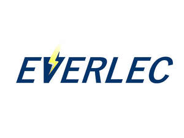

Trade Mark Journal No.2025/044 31 October 2025
UK00004282581 23 October 2025 (9,11)

- Class 9
- Electrical fuses; Electric fuses; Electrical wires; Electrical circuits; Electronic and electrical connectors; Fuses; Circuit fuses; Electrical cords; Fuse wire; Fuse blocks; Fuse boxes; Fuse indicators; Fuse holders; Ceramic fuses; Vehicle fuses; Contact fuses (Electric -); Fuses [for telecommunication apparatus]; Fuses for telecommunication apparatus; Fuses for electric current; Fuses [for electric current]; Fused connection units; Electrical switch boxes; Push leaf switches (Electrical -); Spark plug feeler gauges; Push switches (Electrical -); Sheaths for electrical wires; Electrical resistors; Power wires; Spark plug gap gauges; Electrical switch assemblies; Electrical relays; Electrical plugs; Electric wiring harnesses; Electrical switches; Electrical switch boards; Junction boxes for electric wires; Electrical capacitors; Electrical wiring installations; Junction sleeves for electrical cables; Push button switches (Electrical -); Integrated electrical circuits; Electrical header connectors; Electric wiring; Plug connectors; Power relays; USB chargers adapted for car cigarette lighter sockets; Splice connectors [electric]; Electrical connectors; Power adapters for use in vehicle lighter sockets; Plug connections [electric]; Electrical coils; Electric circuit breakers; Multi-outlet socket blocks; Sockets, plugs and other contacts [electric connectors]; Switch panels [electric]; Electrical sockets; Electrical and electronic connectors; Volt sticks [electrical protection devices]; Electrical control circuits; Electric flasher switches; Electric circuit components; Wire connectors [electricity]; Printed electrical circuits; Terminal blocks (Electrical connecting -); Flash bulbs; Light dimmers; Lamp starters; Dimmer switches for lights; Lighting dimmers; Electric light switches.
- Class 11
- Electrical lamps; Electrical luminaires; Electrical heating elements; Electrical glass bulbs; Electrical light bulbs; Tail lamp bulbs; Lamp bulbs; Halogen light bulb; Light bulbs; Incandescent light bulbs; Halogen light bulbs; Flashlight bulbs; Electric lamp bulbs; Light bulbs for incandescent lamps; Headlamp bulbs; Bulbs for lighting; Dashboard lamp bulbs; Fixtures for incandescent light bulbs; Fluorescent light bulbs; Light bulbs for gas-discharge lamps; Light bulbs, electric; Electric light bulbs; Flourescent electric light bulbs; Miniature light bulbs; Electric bulbs; Smart light bulbs; LED light bulbs; Compact fluorescent light bulbs; Light-emitting diode [LED] light bulbs; Lights for incandescent lamps; Incandescent lamps; Lightbulbs; Fluorescent lamp tubes; Lamp globes; Light Emitting Diode lighting fixtures; Halogen lamps; Electric incandescent lamps; Direction indicator bulbs; Lights for gas-discharge lamps; Lamp reflectors; Reflectors (Lamp -); Incandescent lighting fixtures; Fluorescent lamps; Reflector lamps; Lamp fittings; Candle lamps; Lighting lamps; Infrared lamp fixtures; Pendant fluorescent lighting fixtures; Incandescent lamps and their fittings; Filaments for electric lamps; Light emitting diode lights for automobiles; Fluorescent lamps with low ultra-violet light output; Neon lamps for illumination; Fluorescent lighting tubes; Projector lamps; Fluorescent lights; Illuminant lamps for projectors; Spot lamps for household illumination; Light bulbs for directional signals for vehicles; Lamp fitments; Cord pendants [light fittings]; Nail lamps; Electrical lamps for indoor lighting; Lamps; Light diffusers; Diffusers (Light -); Lamps for vehicle lighting; LED [light-emitting diode] lighting fixtures; Spot lights for household illumination; Lamp casings; Light projectors; Globes for lamps; Lamp finials; Lamps (Globes for -); Lamp holders; Germicidal lamps; Light fixtures; Halogen stage lighting fixtures; Lighting tubes; Lamp shades; Halogen luminaires; Glass covers being fittings for lamps for sun lamps; Sockets for electric lights; Battery powered incandescent emergency lighting units; Indoor fluorescent electrical lighting fittings; Electrical lamps for outdoor lighting; Tubes (Luminous -) for lighting; UV halogen metal vapour lamps; Xenon arc lamps.
Evergreen Blooms Ltd.